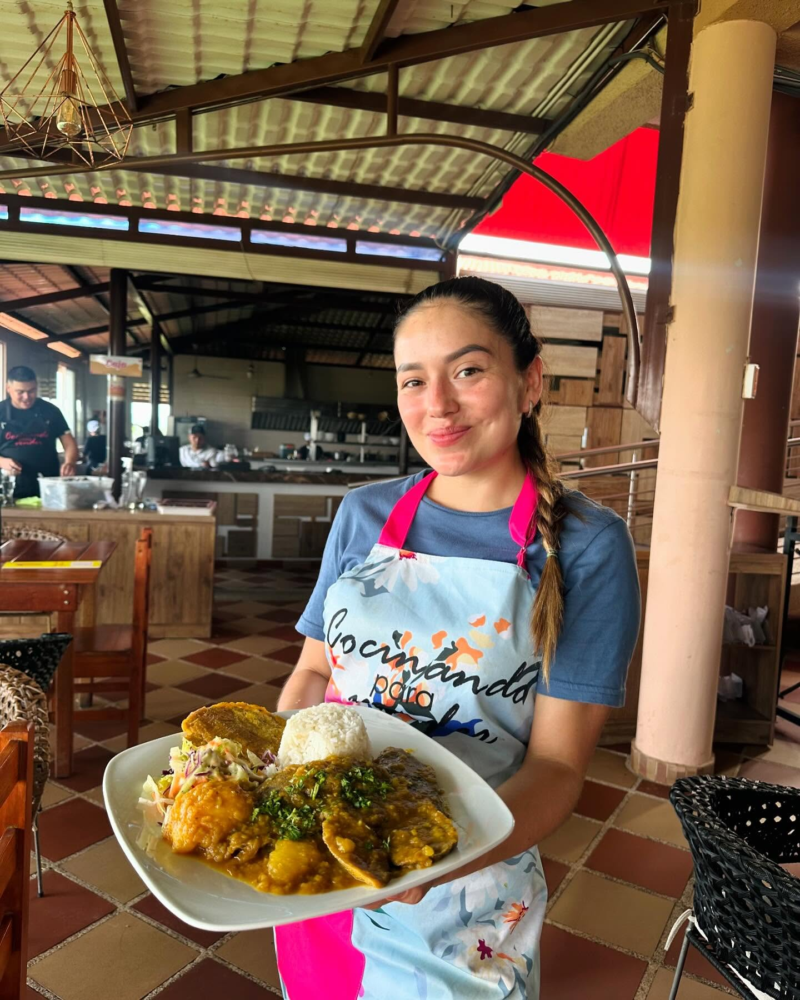
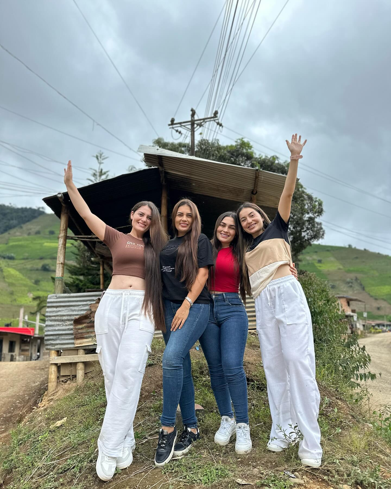
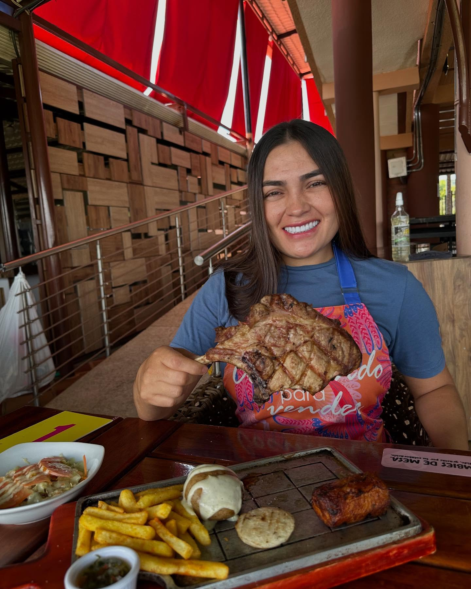
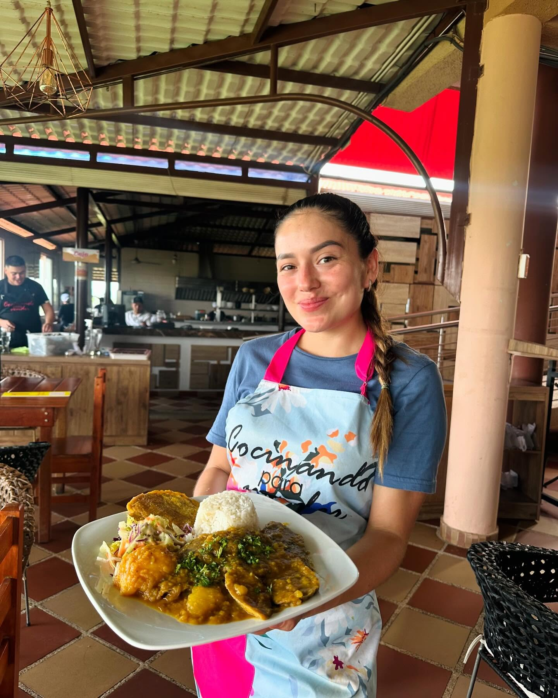
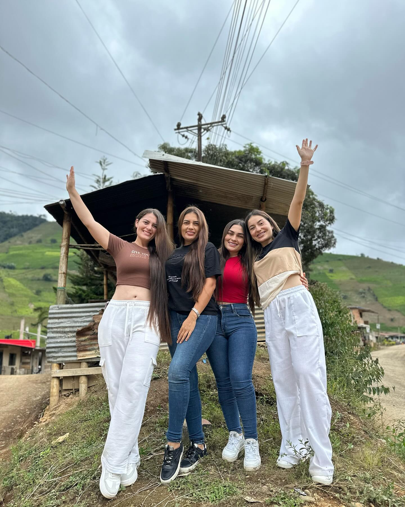
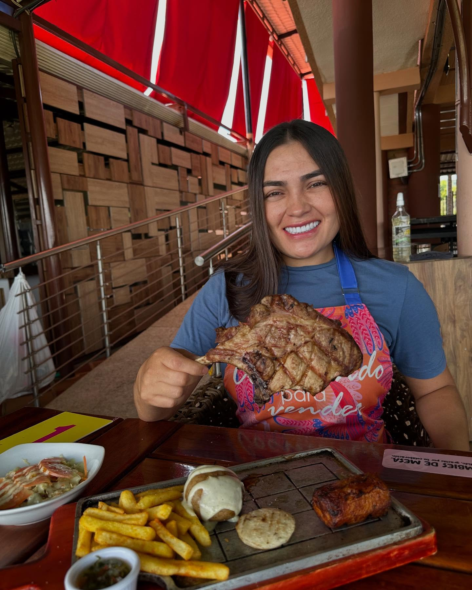
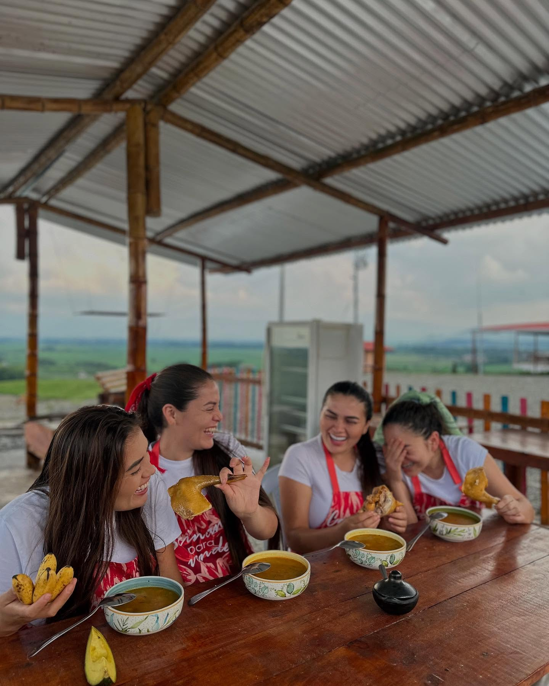
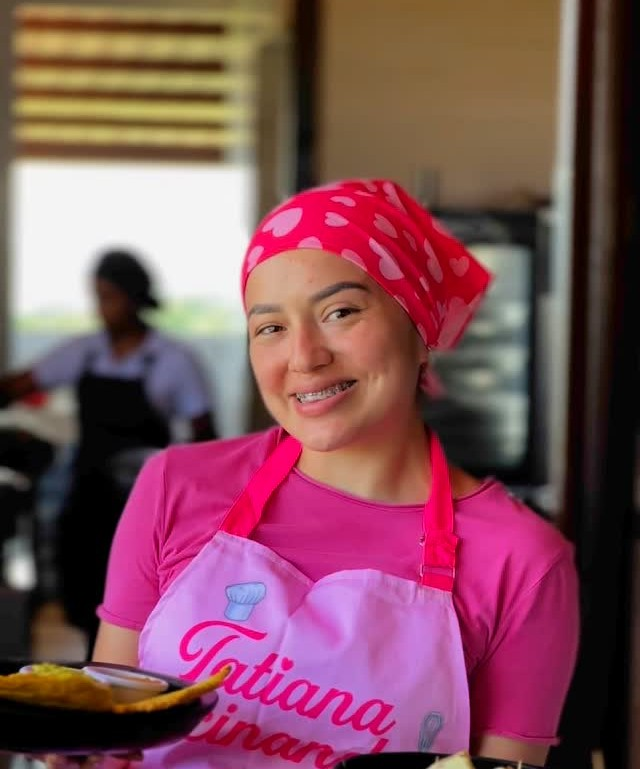
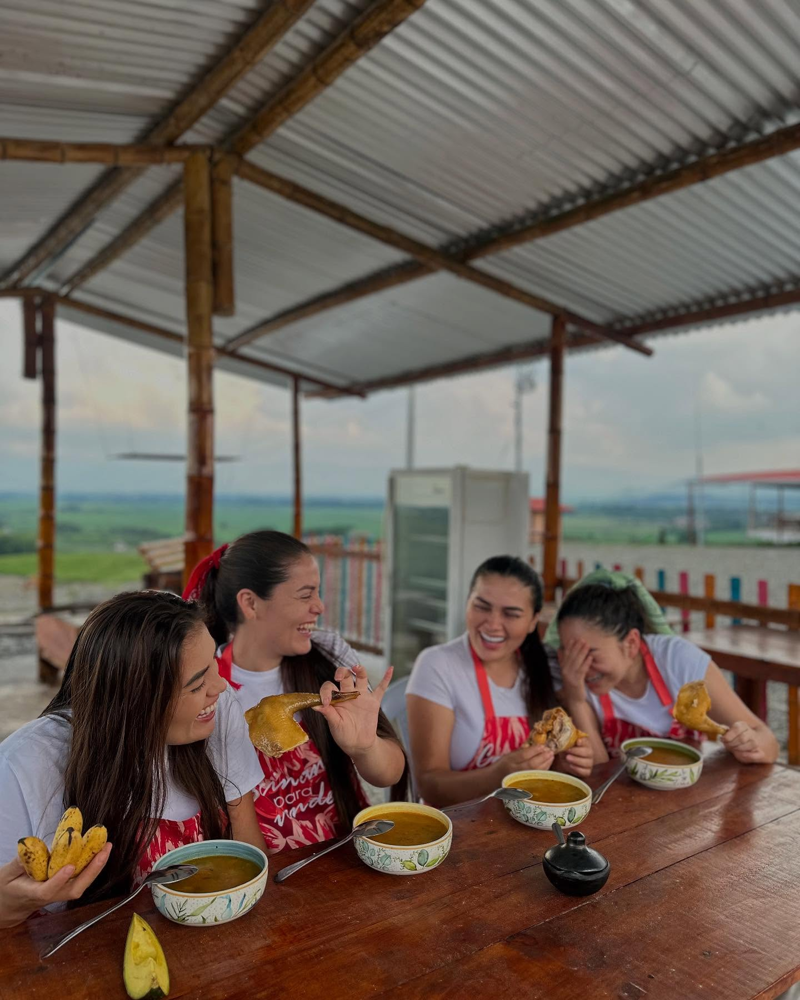
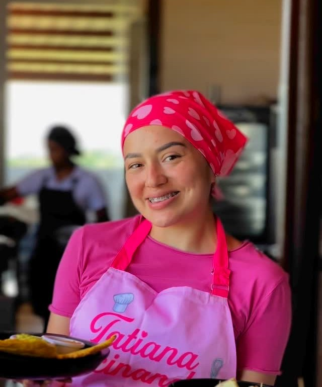

 




Osobuco de cerdo
Corte de carne que proviene de la parte baja del cerdo, específicamente de
la pierna. Su nombre proviene del italiano ossobuco, que significa "hueso con agujero",
ya que este corte incluye un hueso en el centro con médula, lo que le aporta un sabor y
textura únicos al cocinarse, donde con el delicioso toque de Cocinando para Vencer hacen
que sea un experiencia fuera de lo común.